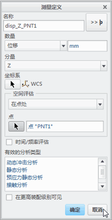
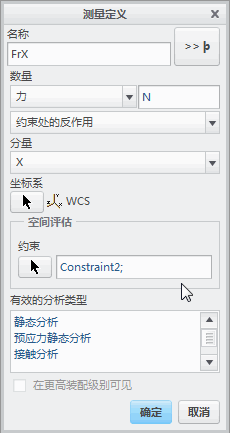

过程: 了解奇点
“关闭窗口”(Close Window)
 “拭除未显示的”(Erase Not Displayed)
“拭除未显示的”(Erase Not Displayed) 
 Simulate_Modeling\Singularities
Simulate_Modeling\Singularities
 FRICTION_GEAR_SHAFT_SIMULATE.PRT
FRICTION_GEAR_SHAFT_SIMULATE.PRT
|
|
||
 |
Creo Parametric 用户打开 FRICTION_GEAR_SHAFT.PRT。 | |
|
|
||
-
任务 1. 定义 Creo Simulate 测量。
1. 在功能区中，选择“主页”(Home) 选项卡。
2. 在“运行”(Run) 组中单击“测量”(Measures)
 。将出现“测量”(Measures) 对话框。
。将出现“测量”(Measures) 对话框。
3. 单击“新建”(New)。将出现“测量定义”(Measure Definition) 对话框。
4. 如图所示完成字段。要选择 PNT1，请单击“选择参考”(Select Reference)
 ，然后在模型中选择 PNT1 基准特征。
，然后在模型中选择 PNT1 基准特征。
5. 单击“确定”(OK)。
已在 Z 方向上为模型中的 PNT2、PNT3 和 PNT4 定义了总共四个位移测量。
6. 在“测量”(Measures) 对话框中，单击“新建”(New)。将出现“测量定义”(Measure Definition) 对话框。
7. 如图所示完成字段。要选择约束，请单击“选择参考”(Select Reference)
。在模型树中，选择 Constraint2。
8. 单击“确定”(OK)。
已经在模型中的 Constraint2 处预先定义了沿 Z 轴的反作用测量。
9. 在“测量”(Measures) 对话框中，单击“关闭”(Close)。

-
任务 2. 为模型定义和运行静态分析。
1. 在功能区中，选择“主页”(Home) 选项卡。
2. 在“运行”(Run) 组中单击“分析和研究”(Analyses and Studies)
 。将出现“分析和设计研究”(Analyses and Design Studies) 对话框。
。将出现“分析和设计研究”(Analyses and Design Studies) 对话框。
3. 单击“文件”(File) > “新建静态分析”(New Static)。将出现“静态分析定义”(Static Analysis Definition) 对话框。
4. 完成以下步骤：
- 在“名称”(Name) 字段中键入 friction_gear_SPA。
- 选择显示在“约束集/元件”(Constraint Set/Component) 和“载荷集/元件”(Load Set/Component) 部分中的约束集和载荷集。
- 选择“收敛”(Convergence) 选项卡。将默认的“单通道自适应”(Single-Pass Adaptive) 方法保持为选定状态。
5. 单击“确定”(OK) 返回到“分析和设计研究”(Analyses and Design Studies) 对话框。
6. 选择 friction_gear_SPA，然后单击“复制”(Copy) 。会列出新的分析，标题为 Copy_of_friction_gear_SPA。
7. 选择已复制的分析并单击“编辑”(Edit) > “分析/研究”(Analysis/Study)。将出现“静态分析定义”(Static Analysis Definition) 对话框。
8. 完成以下步骤：
- 在“名称”(Name) 字段中键入 friction_gear_MPA。
- 选择“收敛”(Convergence) 选项卡，然后从“方法”(Method) 下拉菜单中选择“多通道自适应”(Multi-Pass Adaptive)。
- 在“收敛百分比”(Percent Convergence) 字段中键入 8。
- 在“多项式阶”(Polynomial Order) 部分的“最小”(Minimum) 字段中键入 1，在“最大”(Maximum) 字段中键入 9。
- 校验“局部位移、局部应变能和全局 RMS 应力”(Local Displacement， Local Strain Energy and Global RMS Stress) 已被选中。
9. 单击“确定”(OK) 返回到“分析和设计研究”(Analyses and Design Studies) 对话框。
10. 单击“配置运行设置”(Configure Run Settings) 。将出现“运行设置”(Run Settings) 对话框。
11. 默认情况下，结果和临时输出目录被设置在工作目录中。两种分析都储存在此位置。单击“确定”(OK)。
12. 在“分析和设计研究”(Analyses and Design Studies) 对话框中选择 friction_gear_SPA，然后单击“开始运行”(Start Run)
 。单击“是”(Yes) 以运行交互诊断。
。单击“是”(Yes) 以运行交互诊断。
13. 分析完成后，单击“显示研究状况”(Display Study Status)
 查看汇总报告。
查看汇总报告。
在汇总报告中，检查应力和变形值。
14. 关闭所有对话框并返回至“分析和设计研究”(Analyses and Design Studies) 对话框。
15. 选择 friction_gear_MPA，然后单击“开始运行”(Start Run)
。单击“是”(Yes) 以运行交互诊断。
16. 分析完成后，单击“显示研究状况”(Display Study Status)
查看汇总报告。
17. 关闭所有对话框并返回到 Creo Simulate 窗口。
过程就此结束。